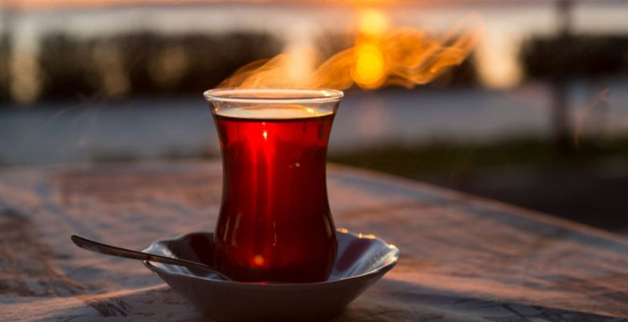
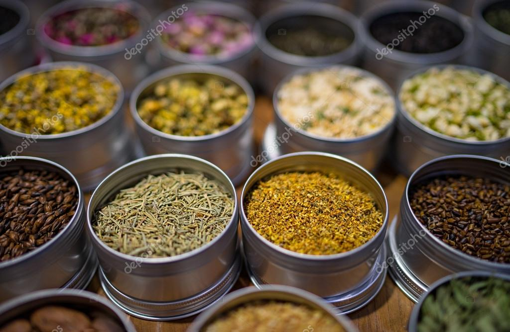
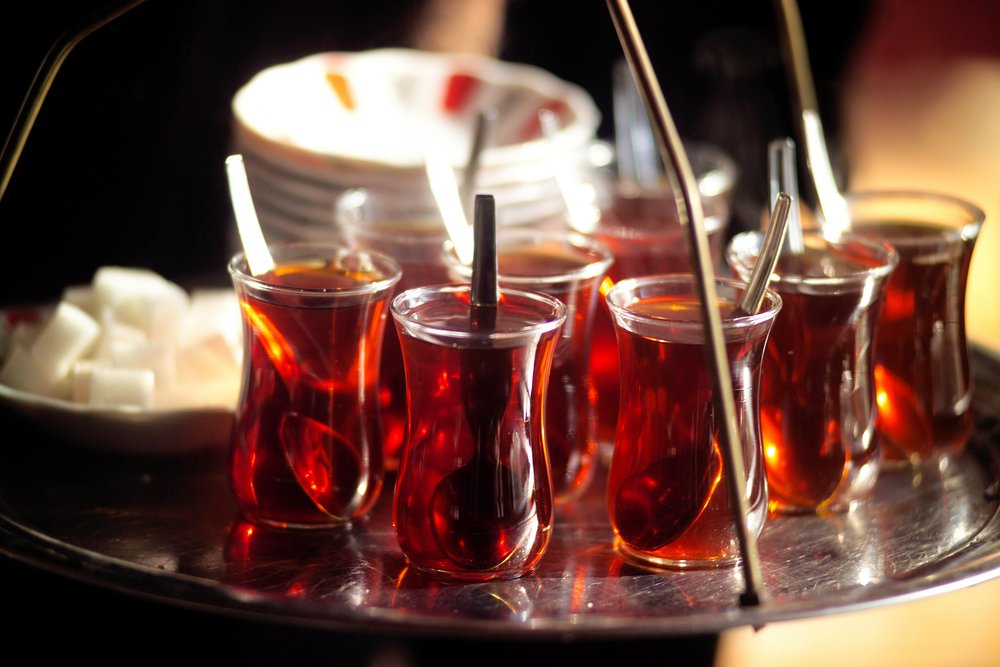
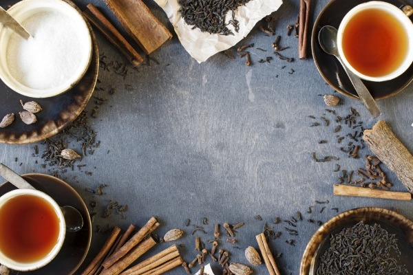
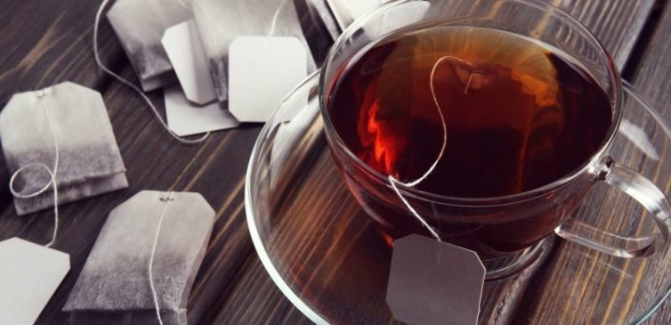

What is the Science Behind Perfect Tea?
Last Edit Date: 8 December 2019
How much do we know about drink tea, which we drink from breakfast to night time in our country and consumed in considerable amount in the world? Types, how to participate in an adventure and entered our homes; do we know how to prepare the best way? Experts say the tea is not made correctly. Tea ranks high on the list of the most consumed drinks in the world. Some love it, others can't wake up without drinking. In some countries, tea is a plant that is regularly drunk during the day and consumed within the region-specific culture. Turkey ranks among the most tea consuming countries. The countries after Turkey are: Afghanistan, Libya, Qatar and the United Kingdom. The country producing the most tea with the title of China. But in all these countries, most people know what tea is; he doesn't know his adventure until he reaches our glasses.
What Is The Tea?
The tea beverage is prepared by brewing the dried tea tree leaves in hot water. There are many types of tea, originally divided into 5 main types: black tea, white tea, green tea, oolong and Pu-erh tea. All these teas come from the same plant. The botanical name of this subtropical plant, always staying green, is 'Camellia sinensis'. There are two subspecies of Camellia sinensis: sinensis (Chinese tea) and assamica (Assam or Indian tea). In other words, none of the plants, such as chamomile, lemon balm, sage and fruit 'teas', which are called 'tea' in most languages, actually have anything to do with tea.
If All Species Are The Same Plants, What Distinguishes Them?
Tea is classified as 'green', 'black' and 'white'; production of tea. The tea leaves are dried after collection and the dried leaves are subjected to 'rolling' to release the aroma-suppressing enzymes and oils. The type of leaves oxidized during the rolling phase determines how long they are oxidized. The longer they wait, the darker the color and the aroma becomes heavier. As you can imagine, the most oxidized tea type is black tea. When the desired level of oxidation is reached, the leaves are exposed to fire to stop the process. This is also done to remove moisture from the leaves and make the tea last longer. This process is called the Orthodox method. Apart from the Orthodox, there is also a method called ez ez-tear-off ((CTC), which was created during World War II and used to increase the amount of tea that can be filled into the chest. Once the leaves have dried, they are transferred to a machine that crushes, tears and rolls them, as the name suggests. It is faster than the orthodox method and the resulting shape is more suitable for tea bags. After these processes, reaching us, tea, without pain; it is up to us to brew the aroma as much as possible. But the experts say that the methods we follow are completely wrong.
For more information about "types of tea", click the button below.
How To Make A Good Tea?
First, use soft water. Also, never use tap water. This may cause you to get a turbid tea. Pay attention to the temperature of the water. Not every tea is made with water at the same temperature, which means that boiling water may ruin the aroma of your tea. Finally, set the brewing time well. When brewing tea, tannins, amino acids and flavors slowly mix into the water and how long it will take depends on the type of tea.
Chemistry of Tea
The aromas that make up the taste and smell of tea mix into the water in a very short time. Mild polyphenols, caffeine and the factors that affect consistency take a little longer while heavy polyphenols, flavanols and tannins take the most time to mix with water. With reasonable brewing method, tannins enrich the aroma of the tea while brewing too high heat or too long; more than the amount of tannin will cause tea to become bitter. If you want a stiffer tea without tasting it, it may be a more sensible option to use more leaves instead of brewing more.
Click to see "the molecule structure of tea".
Sachet Tea Not Recommended
Because of its ease, the tea bags that we use at home, at work and at picnics are not recommended because they are filled with poor quality, deformed leaves when they are produced. In addition, the fact that the leaves are not whole prevents them from obtaining the desired aroma as it exposes more oxygen and light. That's the adventure, features and forms of tea that most of us consume every day. There are many ways to make perfect tea. But you can get your perfect tea just by listening to your own taste.
| ✅ Benefits of Tea | ❌ Detriments of Tea |
that too much of the beverage brings the chance of gastric ulcers. Person should remember that tea has lesser amount of caffeine than coffee. If person drink tea is the maximum quantity then he may experience the problem of iron deficiency and anemia. It is advisable that person should consume tea almost an hour after he has eaten meal. he may experience different diseases like kidney disease and liver disease. |
For more information about "tea", click the button below.